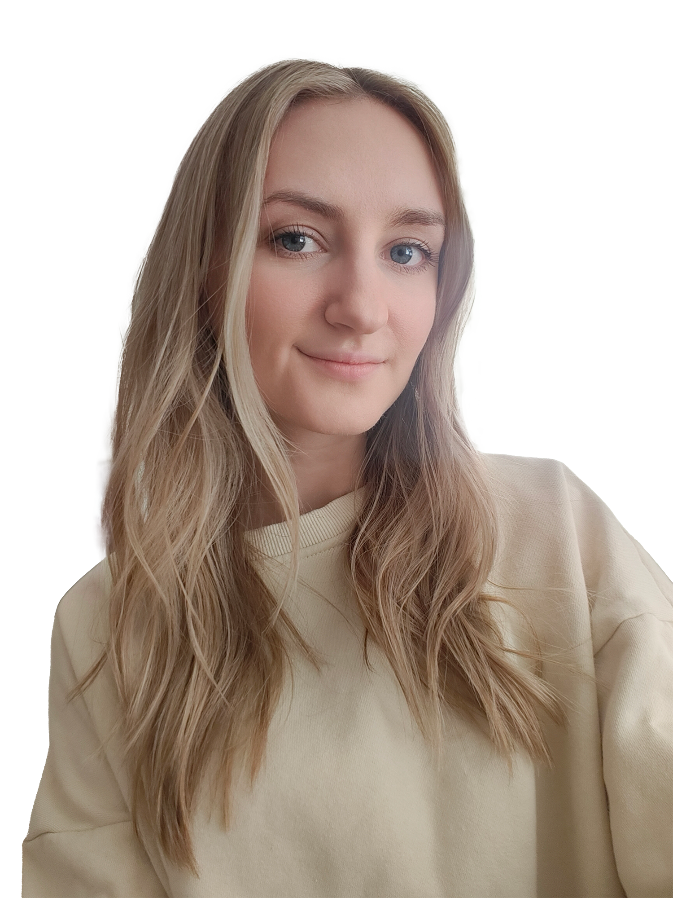

Hej!
Jag heter Maayan och jag älskar bilder. Få saker kan få mig att glömma bort tiden som bildredigering och att sätta ihop bildserier. Därför kan jag lätt säga att det här var en rolig uppgift för mig, och väldigt nyttig för att få lära mig mer om att anpassa bilder för webben.
